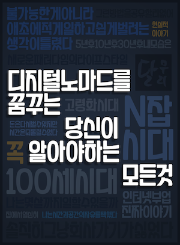

<div class="archive">
    <!-- 책 들어갈 부분 -->
    <div class="catalog">
        <div class="book">
            <h4>[2020년 하반기 예정] <span class="highlight">디지털 노마드를 꿈꾸는 당신이 알아야 하는 모든 것</span> : 디지털 노마드로 사는 방법</h4>
            <div class="book-flex">
                
                <div class="book-desc">
                    <b>저자 | </b>해달별 (<a href="http://blog.naver.com/coachmsoox">블로그</a>)

                    <!-- <br /><b>판매 | </b><a href="">교보문고</a>,
                    <a href="">알라딘</a>--><br />
                    <b>설명 | </b> "서른이 된 내가 바라는 행복은 치열함과 거리가 멀었다. 그래서 나는 디지털 노마드로 살기로 결심했다." | 100세 시대,
                    당신은 몇 살까지 일할 수 있습니까? - '디지털 노마드는 허상이다?' 세상에 남들보다 더 적게 일하고, 더 쉽게 일해서 부자가 되는 방법은
                    없습니다. 또 그런 방법이 있다면 그 누구도 알려주지 않을 것 입니다. 이 책은 '쉽게 돈을 벌 수 있다는 부업'에 대한 책이 아닙니다. 이
                    책은 당신의 삶을 바꿔줄 새로운 라이프 스타일에 대해 이야기 합니다.
                </div>
            </div>
        </div>
    </div>
</div>
